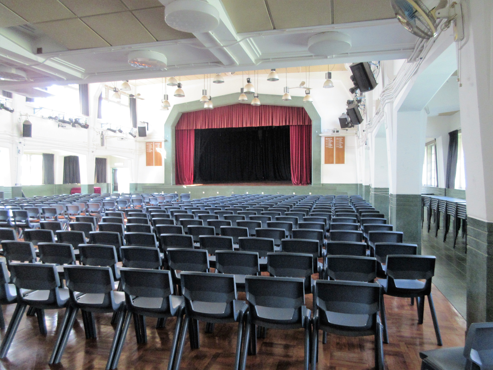

Green Day- Time of Your Life
I remember listening to a few graduating classes of students sing this song in their departing ceremony on their last day of KGV. I remember looking up at the stage of older students, thinking that my time to leave high school wouldn’t come any time soon. You know, we’ve still got 7 years till the end. I mean we haven’t even started GCSEs yet. We haven’t started IB yet. But then, there we all were in our predecessors’ position. I remember being on that stage, among my peers, and looking out into the audience of teachers and younger students. I willed myself to not cry; it took a lot of effort but I think I succeeded. Looking back, it didn’t matter if I cried or not. I miss those times.
